Foto/video
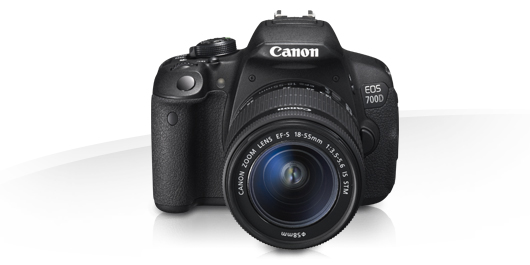Canon EOS 7000D
spejlrefleks med video (max 29 min. video ad gangen) (64 GB) (2)
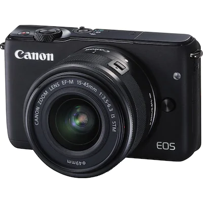Canon EOS M10
spejlløst systemkamera med video (max 29 min. video ad gangen) (64 GB) (1)
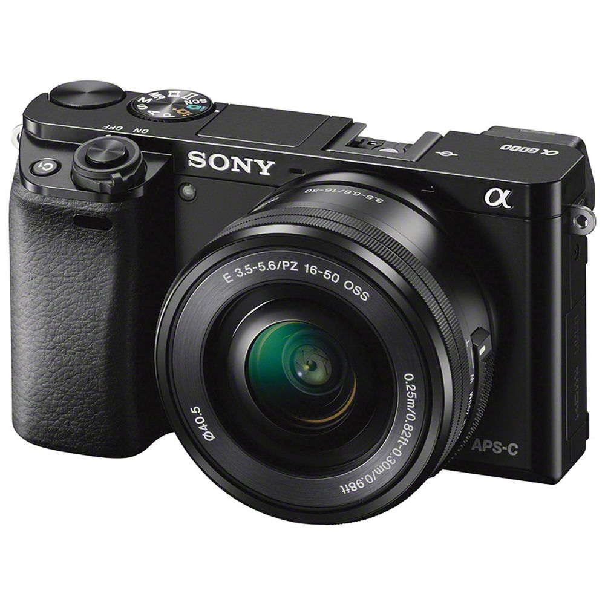Sony Alpha a6000
spejlløst systemkamera med video (max 29 min. video ad gangen) (64 GB) (1)
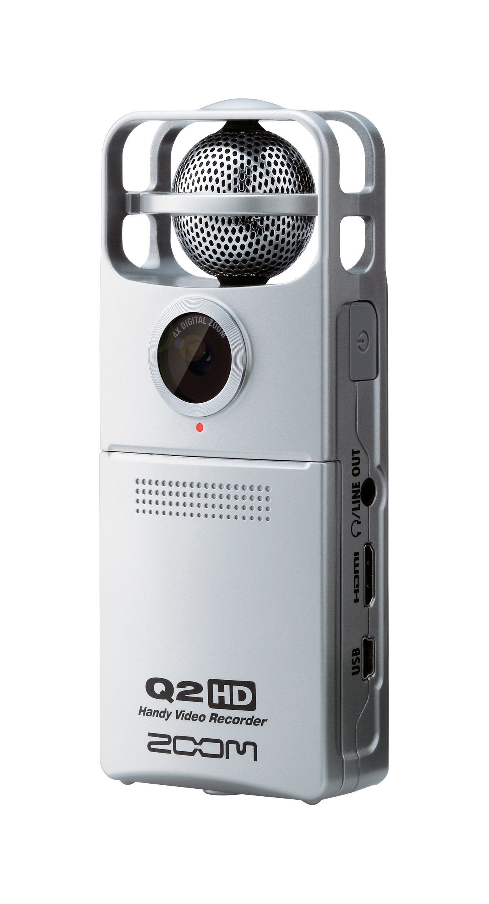Zoom Q2HD
bruges mest som diktafon m/u billede 16 GB SD-kort (6)
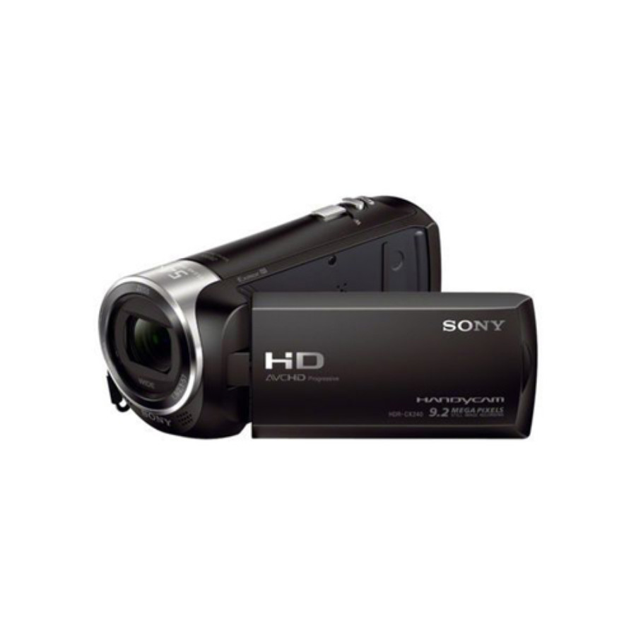Sony Handycam HD
(m 120 GB harddisk) (3)
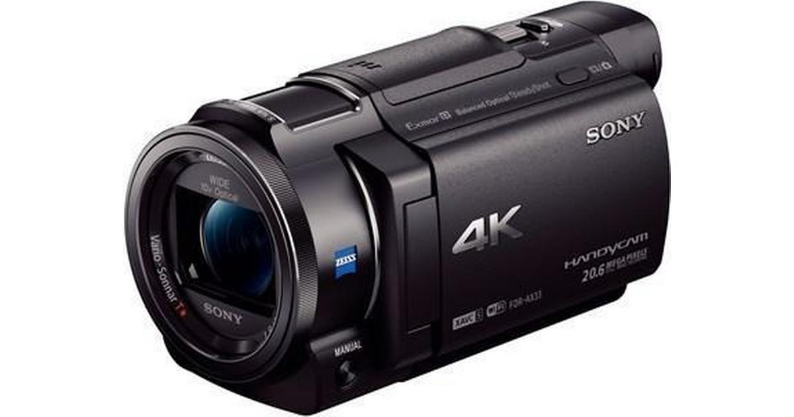Sony Handycam 4K (model FDR-AX33)
(64 GB) (2)
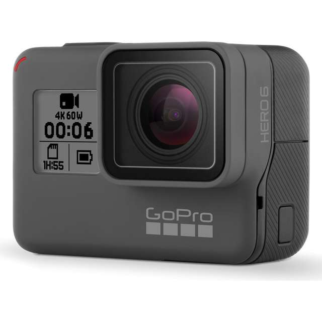GoPro Hero6 inc.
stor tilbehørspakke (1)
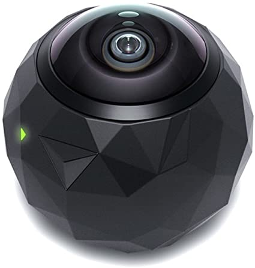360 FLY action HD camera
360 kamera med forskellige mounts (1½)
Lys
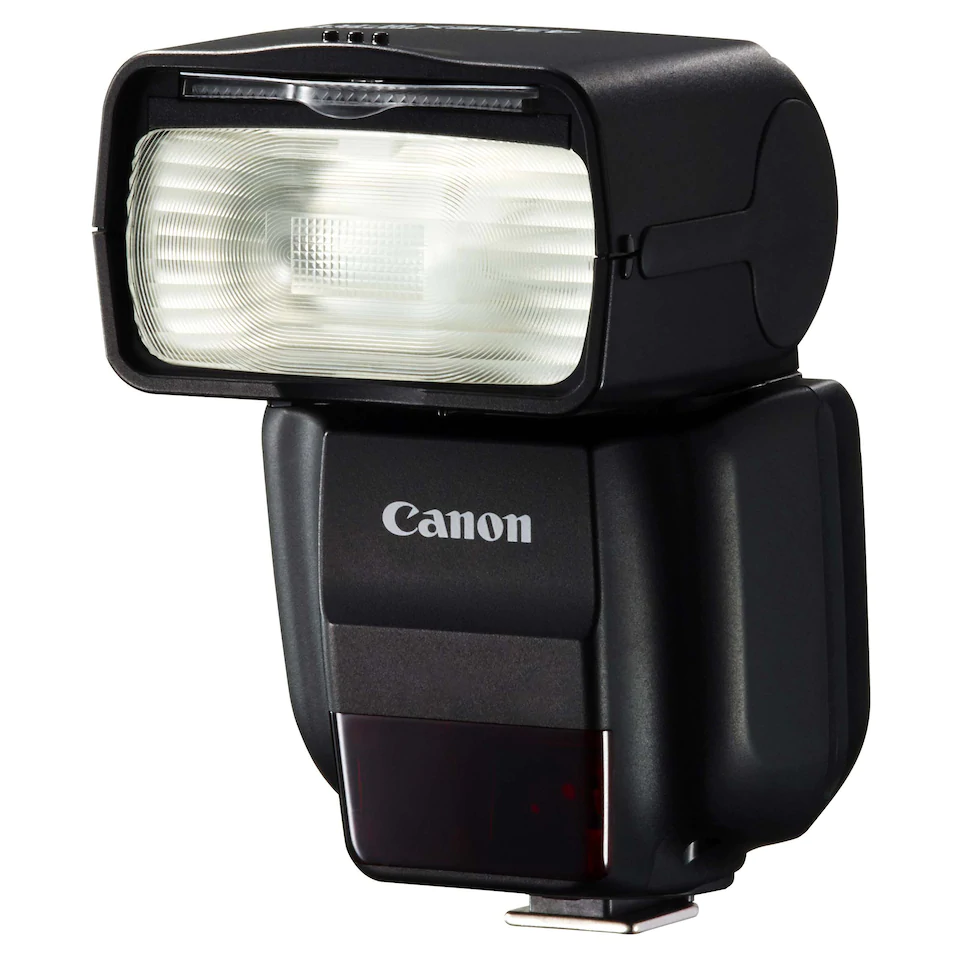Blitz til Canon (1)
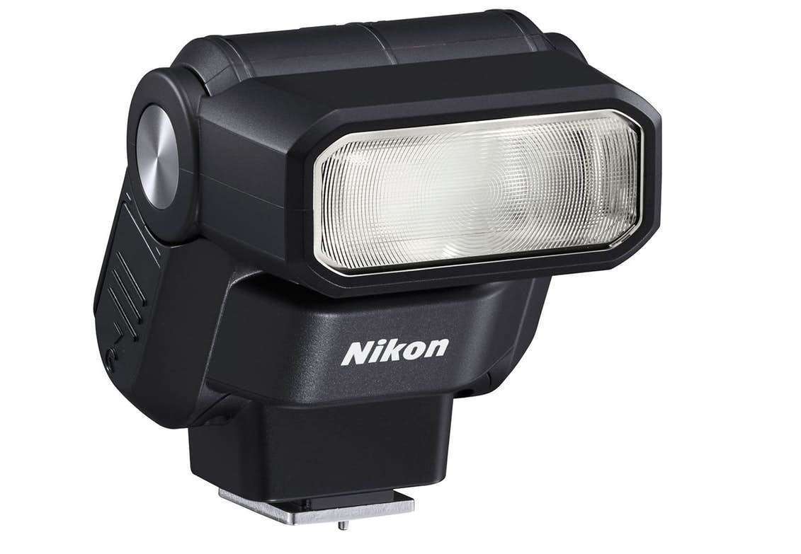Blitz til Nikon (2)
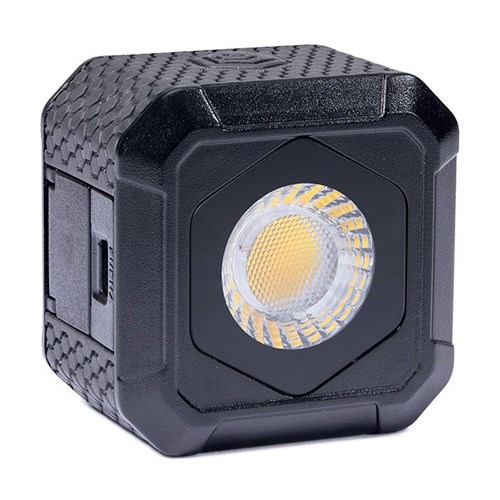LumeCube Air (mini-lys til foto-/videooptagelse) (3)
Lyd
Diktafoner
Zoom Q2HD
videokamera, hvor billedoptagelse kan slås fra, ideelt til interview (6)
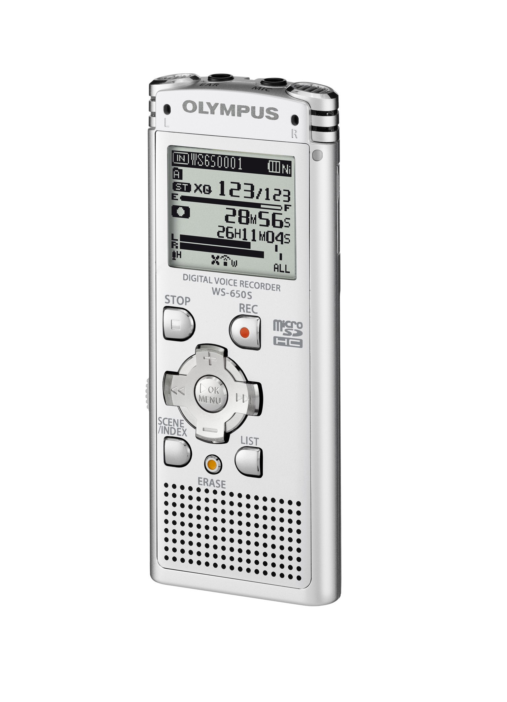Olympus WS-650S
digital diktafon (2GB / 529 timer) (1)
Headsets
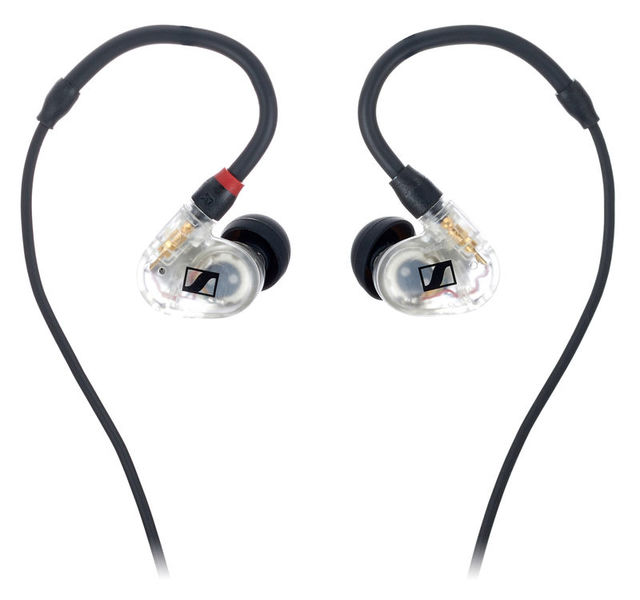Sennheisser (in-ear) (1)
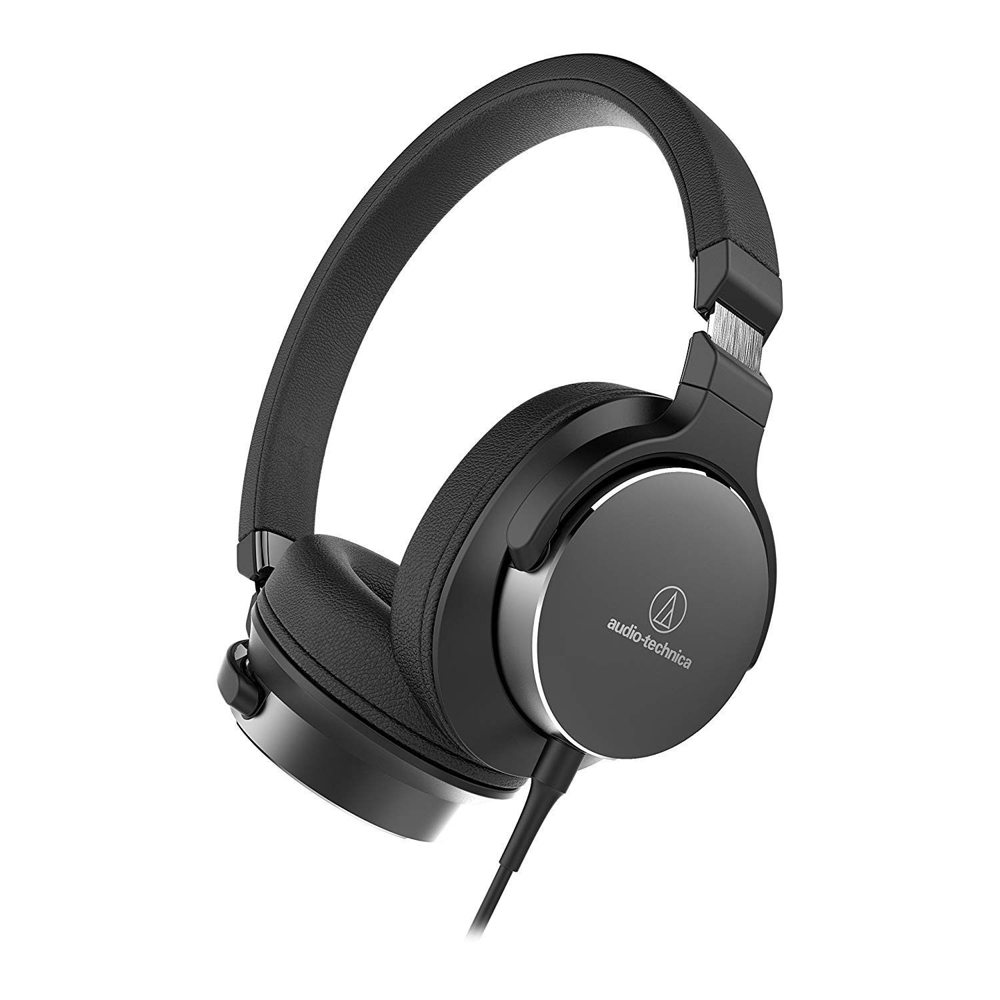Audio Technica (on-ear, støjreducerende) (4)
Mikrofoner
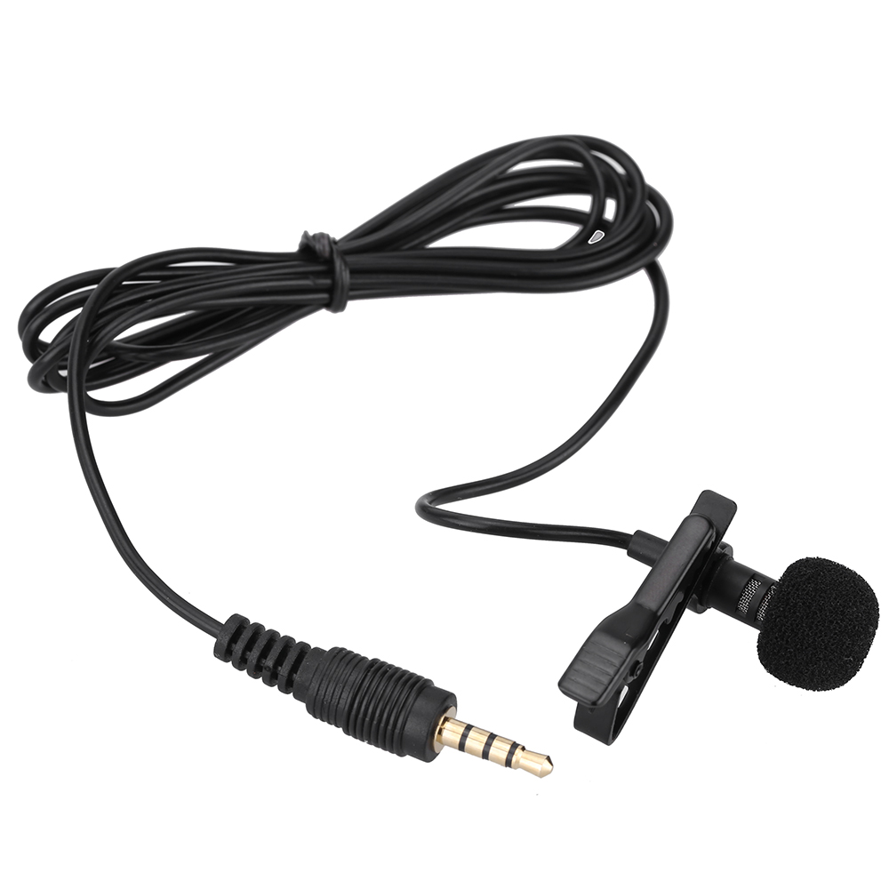Mikrofon, revers, Minijack (1)
Mikrofon, revers, smartphonekompatibel (4)
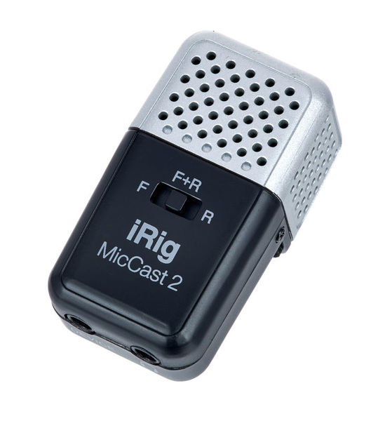Mikrofon, iRig Mic Cast, smartphonekompatibel (1)
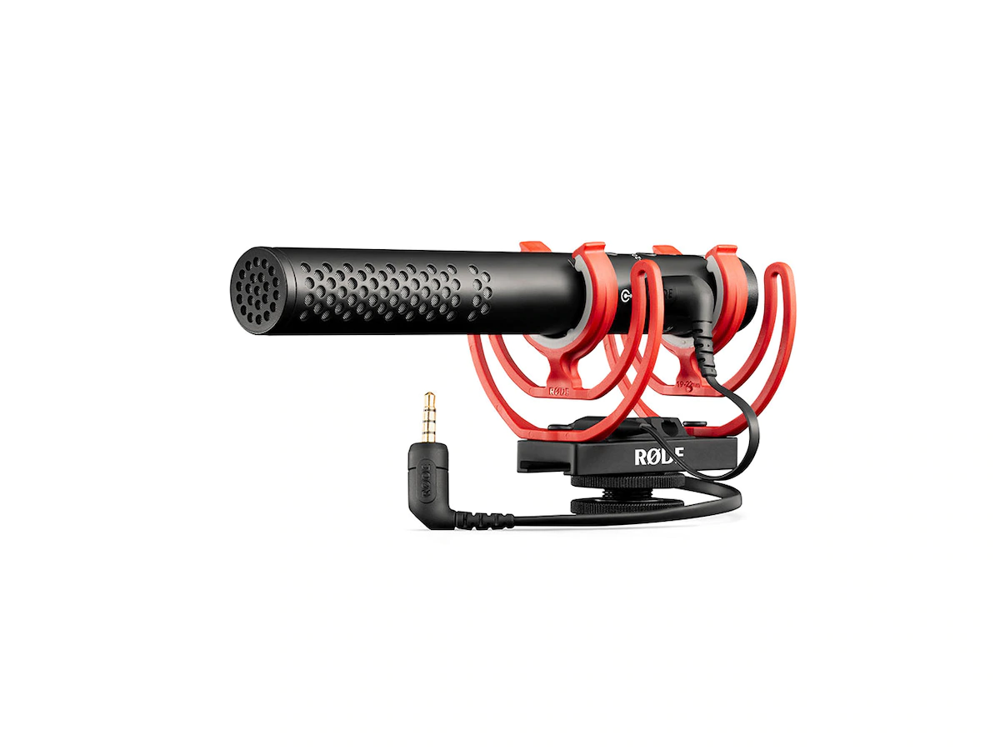Mikrofon 'Røde', Minijack (1)